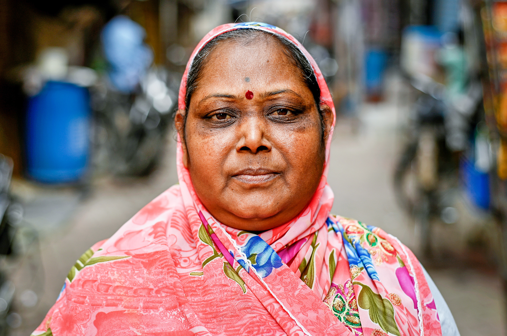

योग सफलता की कहानियाँ
जानिए कैसे योग ने इन लोगों की जिंदगी बदली


योग सफलता की लिखित कहानियाँ
आहना की कहानी
एक लड़की जिसका नाम आहना था, वह 22 साल की थी। उसे अपने करियर के तनाव के कारण चिंता (एंग्जायटी) की समस्या थी। उसने मनोवैज्ञानिक और मनोचिकित्सक से परामर्श और उपचार लेकर कुछ राहत पाई, लेकिन वह पूरी तरह से ठीक नहीं हो पाई। फिर उसने एक योग कक्षा में भाग लिया, जहाँ उसे परामर्श भी दिया गया। लगभग 4 महीने के योग अभ्यास से उसकी चिंता के स्तर में सकारात्मक बदलाव आए और 1 साल के भीतर वह पूरी तरह से चिंता मुक्त हो गई। इसके बाद, उसने बताया कि अब वह अपनी सभी जिम्मेदारियों को खुशी और आत्मविश्वास के साथ निभा पा रही है।

मधु की कहानी
एक महिला जिसका नाम मधु था, वह 42 वर्ष की थी और सर्वाइकल की समस्या से पीड़ित थी। उसे जोड़ों में दर्द होता था और उसने इलाज पर काफी पैसा खर्च किया था। लेकिन लगभग 6 महीने के योग अभ्यास के बाद कुछ सुधार देखा गया। डॉक्टर द्वारा बताए गए समय से पहले ही वह योग के अभ्यास से पूरी तरह ठीक हो गई, जिसे डॉक्टर ने भी योग का प्रभाव माना।

प्रियंका की कहानी
प्रियंका, 28 साल की एक कॉर्पोरेट कर्मचारी थी, जिसका वजन 90 किलो से अधिक था। लगातार बढ़ते वजन के कारण उसका आत्मविश्वास कम होता जा रहा था, और वह खुद को समाज से दूर करने लगी थी। जिम और डाइटिंग की कई कोशिशों के बाद भी उसे संतोषजनक परिणाम नहीं मिले। फिर एक दोस्त ने उसे योग करने की सलाह दी। प्रियंका ने नियमित रूप से योग और प्राणायाम का अभ्यास शुरू किया। 8 महीनों में उसने 20 किलो वजन कम किया और खुद को पहले से ज्यादा ऊर्जावान और आत्मविश्वासी महसूस किया। अब वह अपने शरीर को लेकर पहले से अधिक सहज है और दूसरों को भी योग अपनाने के लिए प्रेरित कर रही है।
मीरा की कहानी
मीरा, 30 साल की एक शिक्षिका थी, जो बचपन से ही माइग्रेन की समस्या से पीड़ित थी। दवाओं से थोड़ी राहत तो मिलती थी, लेकिन सिरदर्द बार-बार लौट आता था। डॉक्टरों ने उसे योग और ध्यान करने की सलाह दी। शुरुआत में वह ज्यादा भरोसा नहीं कर रही थी, लेकिन जब उसने नियमित रूप से अनुलोम-विलोम, भ्रामरी और शवासन करना शुरू किया, तो कुछ ही महीनों में उसकी स्थिति में सुधार दिखने लगा। 1 साल के अभ्यास के बाद, उसकी माइग्रेन की समस्या लगभग खत्म हो गई। अब वह योग के बिना अपने दिन की शुरुआत की कल्पना भी नहीं कर सकती
योग से जुड़े प्रेरणादायक विचार
योग सफलता की वीडियो कहानियाँ
श्रद्धा की शक्ति
यह वीडियो योग की कहानियों के माध्यम से श्रद्धा की शक्ति को दर्शाता है।
प्रेम को समझना सरल है
इस वीडियो में प्रेम की सरलता और योग के माध्यम से उसे समझने के बारे में बताया गया है।
गरदन के लिए योग अभ्यास
यह वीडियो शुरुआती लोगों के लिए गरदन के योग अभ्यासों पर केंद्रित है।
योग का इतिहास
इस वीडियो में योग के 6000 वर्ष पुराने इतिहास, उसकी उत्पत्ति और महत्व को दर्शाया गया है।